Архитектура компьютеров и Операционные Системы
26 февраля 2026
Изучение идеалогии, применение средств контроля версий и освоение умения по работе с git.
Установление git и gh:
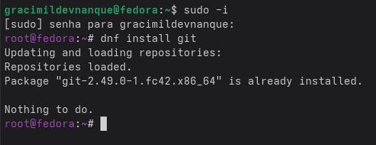
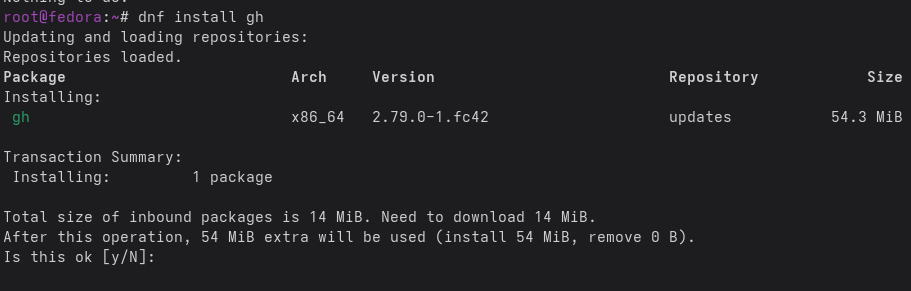
В качестве имя и email владельца репозитории задаю свои имя и email и настраиваю utf-8:
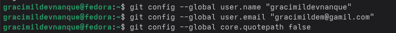
Задаю имя начальной ветки и паррамеры autocrlf и safecrlf:
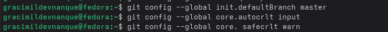
Создаю ключи ssh по алгоритму rsa с размером 4096 бит:
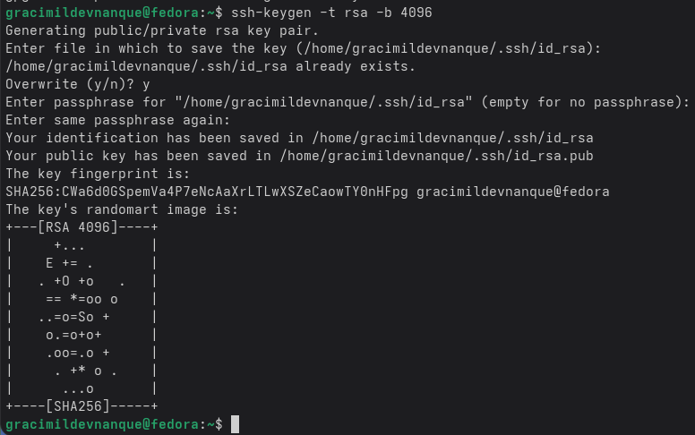
Генерирую ключ gpg –full-generate-key:
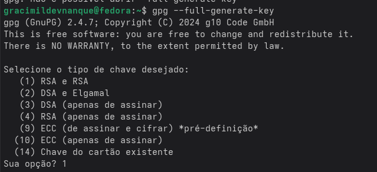
Из предложенных опций выбираю тип RSA and RSA; размер 4096; срок действия 0:
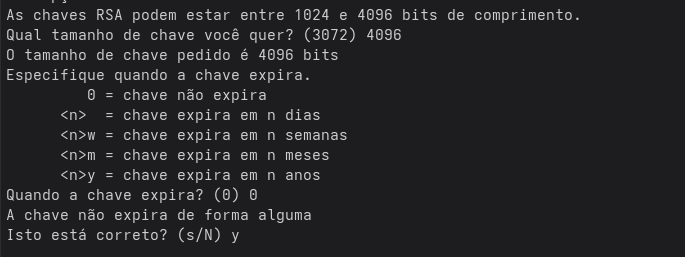
GPG запросил личную информацию, которая сохранится в ключе Имя и адрес электронной почты:
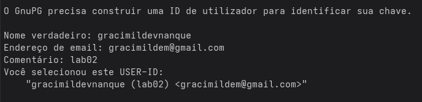
Вывожу список ключей:
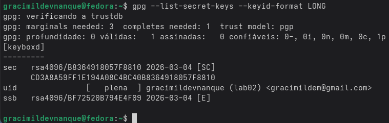
Установливаю xclip:
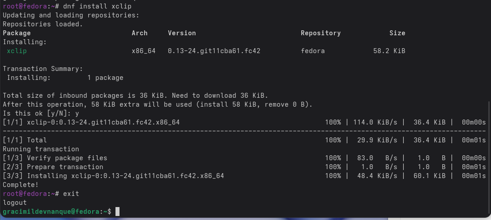
Cкопирую сгенерированный gpg ключ в буфер обмена:
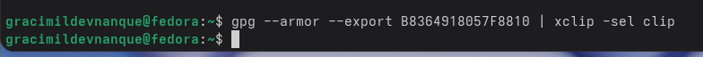
Далее перехожу в настройки GitHub, нажимаю на кнопку New GPG key и вставляю полученный ключ:
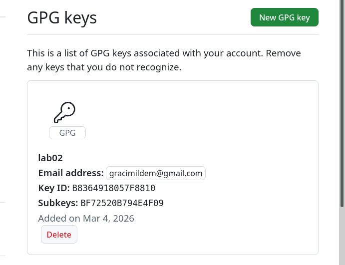
Используя введёный email, указиваю Git применять его при подписи коммитов:
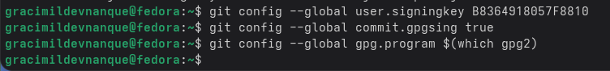
Начинаю авторизацию в gh используя gh auth login:
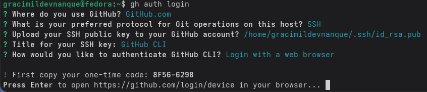
Завершаю авторизацию на броузер:
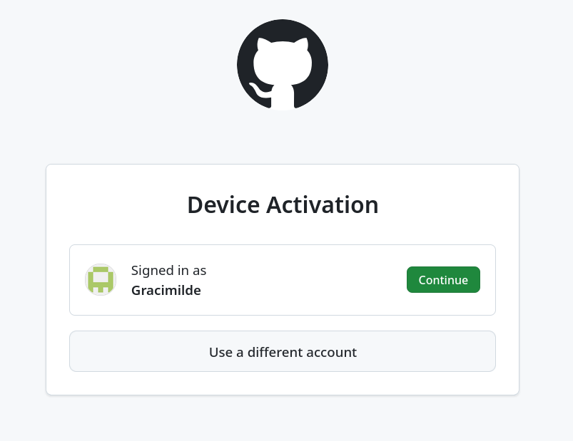
Создаю каталог “mkdir -p ~/work/study/2025-2026/”Операционные системы”:
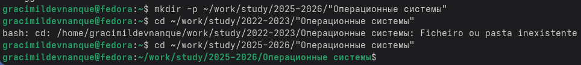
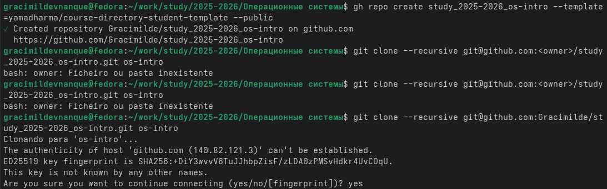
Удаляю лишные файлы:
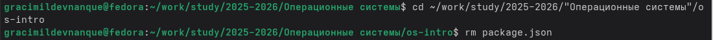
Создаю еще необходимые каталоги:
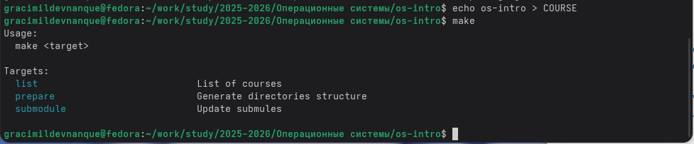
Отправляю Файлы на сервер:
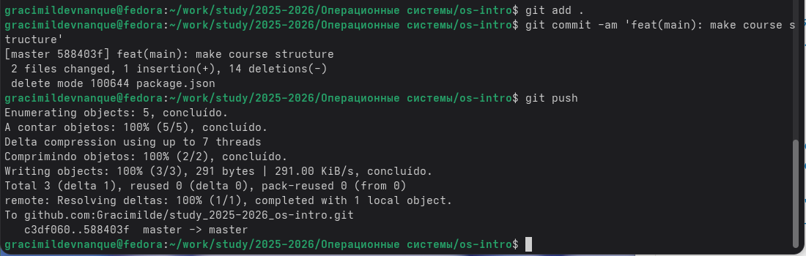
При выполнении лабораторной работы я изучила идеалогию, применение средств контроля версий и освоеила умение по работе с git.